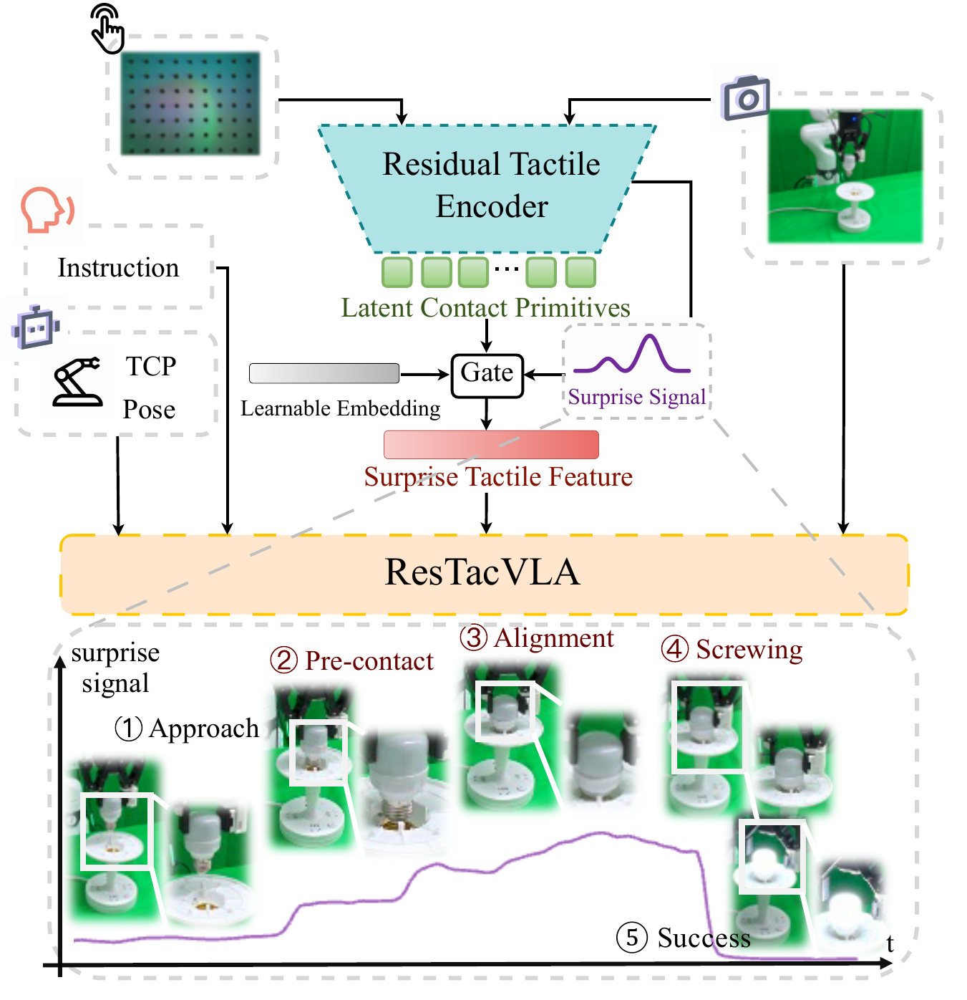
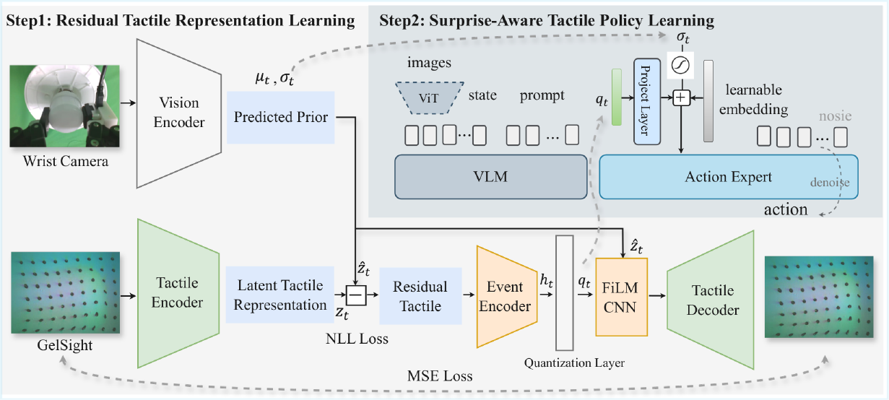
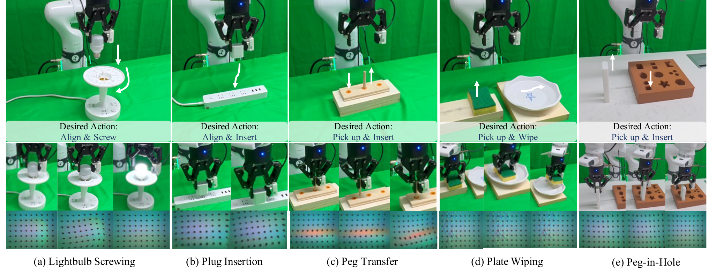
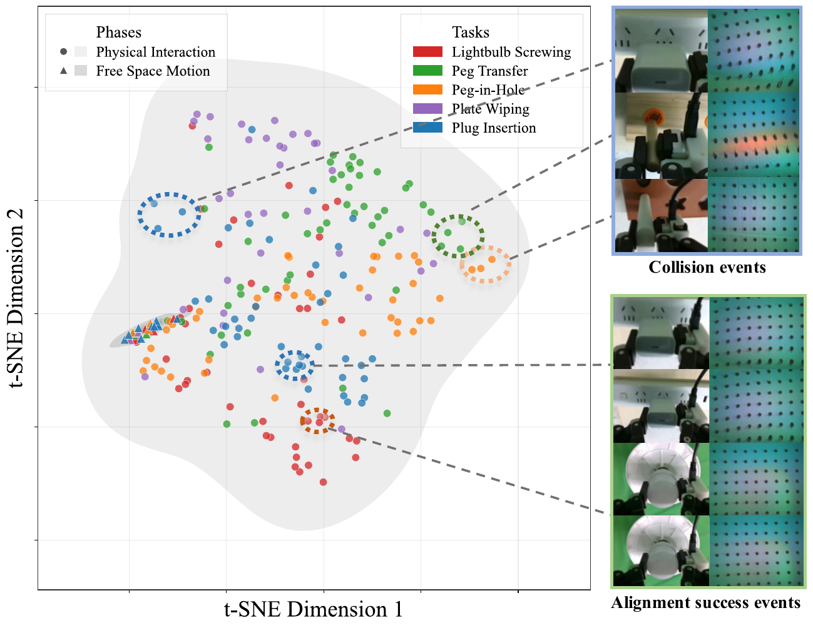
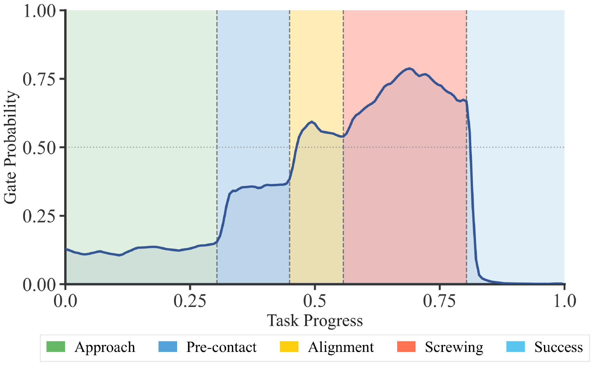
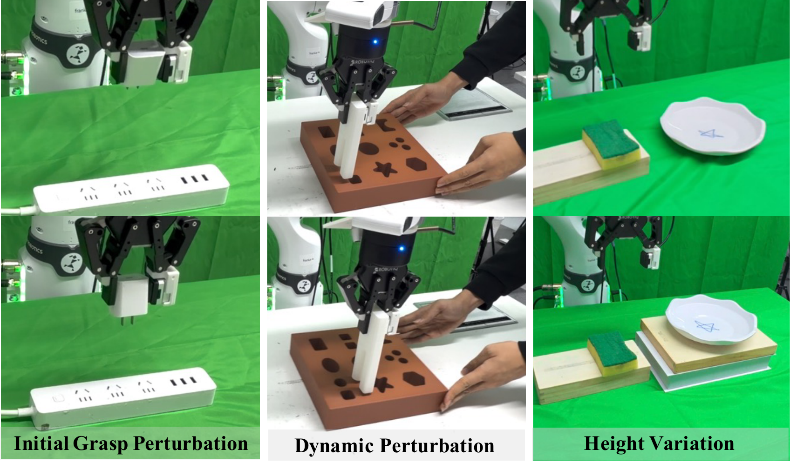

Residual tactile VLA for physical interaction
ResTacVLA makes touch count only when vision becomes unreliable.
Contact-rich manipulation needs tactile feedback, but directly injecting high-dimensional touch into VLA policies can be drowned out by visual features. ResTacVLA reformulates tactile sensing as residual information gain: the part of touch that visual priors fail to predict.
Abstract
Tactile perception is indispensable for contact-rich manipulation, yet integrating it into Vision-Language-Action models often induces modality collapse, where high-bandwidth visual features overshadow sparse tactile cues. Inspired by predictive coding, ResTacVLA represents tactile data as the discrepancy between visual priors and physical sensations. The resulting residual tactile representation filters visually predictable dynamics and turns sparse tactile signals into dense, high-value information gain.
Residuals are discretized into latent contact primitives with a vector-quantized bottleneck, while a surprise-aware gate adaptively prioritizes tactile integration during visually unreliable phases. Experiments across five real-world contact-rich tasks show that ResTacVLA consistently outperforms vision-only and naive tactile fusion baselines while remaining robust to unexpected disturbances.

Contributions
Residual tactile representation
Tactile feedback is modeled as the residual between predicted and actual physical sensation, reducing visual redundancy and mitigating modality imbalance.
Latent contact primitives
A cross-modal predictor and VQ bottleneck transform high-dimensional tactile images into compact primitives that capture critical contact events.
Surprise-aware gating
Prediction uncertainty drives a gate that suppresses tactile noise in free space and amplifies touch when physical interaction becomes ambiguous.
Method
ResTacVLA has two stages: learn what touch adds beyond vision, then inject it only when surprise is high.
First, the cross-modal predictor estimates tactile latents from wrist-camera observations and extracts residuals from actual GelSight signals. Second, the frozen residual encoder injects quantized contact primitives into the action expert through a surprise-aware gate.

Step 1: Residual tactile learning
The model predicts tactile latents from wrist vision, subtracts them from actual tactile embeddings, and quantizes the residual into latent contact primitives.
Step 2: Surprise-aware policy
A learned gate uses prediction uncertainty to decide when tactile primitives should influence the action expert, preserving visual stability during free-space motion.
Contact-Rich Tasks
The benchmark covers five real-world tasks that require fine-grained physical feedback: threaded screwing, plug insertion, peg transfer, plate wiping, and peg-in-hole insertion.

Demonstrations
Browse representative rollouts across tasks. Videos are grouped by task and include vision-only baselines, tactile ResTacVLA runs, and generalization settings where available.
Results
ResTacVLA achieves the strongest average success rate across the contact-rich benchmark, improving over the vision-only VLA baseline by 34.6 percentage points and over Diffusion Policy without tactile input by 44.0 percentage points.
| Method | Lightbulb-I | Plug-I | Peg-I | Transfer | Wiping | Average |
|---|---|---|---|---|---|---|
| pi0.5 Vision Only | 8.0 | 20.0 | 40.0 | 26.7 | 20.0 | 28.2 |
| pi0.5 w/ T-UniT | 12.0 | 32.0 | 53.3 | 66.7 | 33.3 | 42.3 |
| ResTacVLA | 32.0 | 60.0 | 80.0 | 60.0 | 60.0 | 62.8 |
Interpretability
Latent contact primitives separate free-space motion from task-specific physical interaction events. The surprise-aware gate stays low during approach and rises as contact and thread engagement become important.


Robustness
ResTacVLA remains effective under dynamic target displacement, surface height variation, and initial grasp perturbation, showing that residual tactile cues support recovery when visual priors are unreliable.

| Method | Dynamic | Height +2 cm | Height -2 cm | Grasp |
|---|---|---|---|---|
| pi0.5 Vision Only | 26.7 | 33.3 | 0.0 | 8.0 |
| pi0.5 w/ T-UniT | 40.0 | 46.7 | 13.3 | 20.0 |
| ResTacVLA | 66.7 | 53.3 | 40.0 | 52.0 |
Citation
@inproceedings{zhang2026restacvla,
title = {Feeling the Unexpected: ResTacVLA for Contact-Rich Manipulation via Residual Tactile Representation},
author = {Zhang, Pengwei and Xie, Bin and Meng, Xinpan and Guo, Xinyu and Hao, Ce and Deng, Fang and Cheng, Long and Wang, Tiancai},
booktitle = {IEEE/RSJ International Conference on Intelligent Robots and Systems (IROS)},
year = {2026}
}